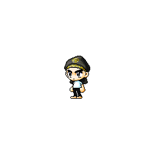
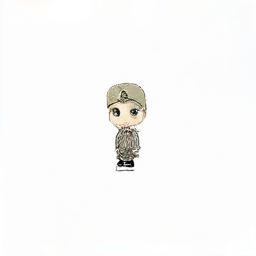
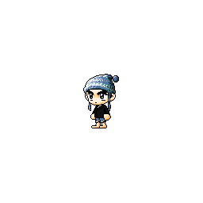
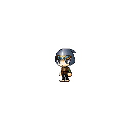
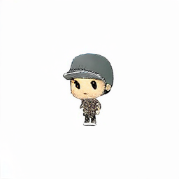
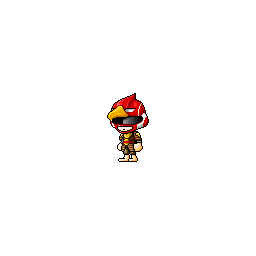
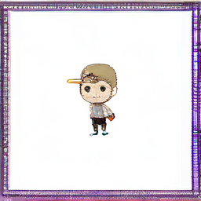
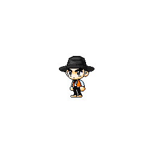
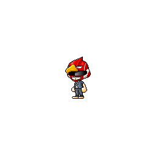

Joint TI
Joint textual inversion optimizes 30 item-identifier embeddings in both SDXL text encoders while freezing all remaining parameters. Each inference prompt specifies one learned hat, top, and bottom identifier.
Experiment 2026.08.29 · KMS v389 · Random seed 42
We evaluate whether jointly optimized item-token embeddings support the generation of unseen hat–top–bottom combinations. The study uses a complete 10×10×10 factorial render set and evaluates 100 combinations excluded from optimization.
The end-to-end pipeline completes successfully; however, Joint TI obtains lower CLIP similarity and higher LPIPS than the shuffled control. The results therefore do not support reliable cosmetic-item binding under this configuration.
01 / Experimental setup
The item vocabulary is obtained from a single pinned MapleStory.IO KMS snapshot. We hold character identity, pose, canvas, rendering parameters, and random seeds fixed to isolate variation in the equipped hat, top, and bottom.
Dataset manifest SHA-256
e2e1842de5a7c94073b171397ea760d1b6c6f57cb01a0970d2798f2483472ae5
02 / Optimization
The VAE, UNet, and both text-encoder backbones remain frozen. After each optimizer step, all embedding rows other than the 30 item identifiers are restored, yielding 61,440 trainable parameters across the two SDXL text encoders.
| Base model | Stable Diffusion XL 1.0, pinned revision |
|---|---|
| Optimization method | Joint textual inversion, dual text encoders |
| Optimizer / learning rate | AdamW / constant 5 × 10−4 |
| Iterations / batch size | 3,000 / 4 |
| Numerical precision | BF16 |
| Wall-clock time | 15.18 minutes |
| Peak allocated CUDA memory | 9.11 GiB |
Window means are reported because the stochastic per-iteration loss is noisy.
03 / Evaluation
We evaluate the first 100 of 200 held-out combinations using 30 denoising steps and a classifier-free guidance scale of 7.0. Oracle and Shuffled provide positive and negative controls, respectively, for interpreting the learned model output.
Joint textual inversion optimizes 30 item-identifier embeddings in both SDXL text encoders while freezing all remaining parameters. Each inference prompt specifies one learned hat, top, and bottom identifier.
Each target image is compared with an identical copy. This upper-bound control is not a model output; it verifies that the pairing and metric implementations recover the expected score for an exact match.
Each target is compared with a different real rendered outfit obtained by a deterministic derangement. This control is not a model output; it measures similarity attributable to the shared background, body, pose, and rendering domain.
Interpretation. Evidence for item binding would require Joint TI to outperform Shuffled on semantic and perceptual metrics and move toward the Oracle upper bound. Joint TI instead obtains lower CLIP similarity and higher LPIPS; therefore, this experiment does not establish reliable cosmetic-item binding.
| Evaluation source | Pixel similarity ↑ | Foreground IoU ↑ | CLIP ↑ | LPIPS ↓ |
|---|---|---|---|---|
| Oracle | 1.0000 | 1.0000 | 1.0000 | 0.0000 |
| Shuffled | 0.9903 | 0.7559 | 0.7257 | 0.0472 |
| Joint TI | 0.8761 | 0.1793 | 0.5809 | 0.3641 |
Images are displayed with 3× CSS magnification from the original 256 px files. No image post-processing is applied. Selecting an image opens the complete source frame.
a maplestory character wearing <bottom_1060001> <hat_1000001> <top_1040002>43

a maplestory character wearing <bottom_1060007> <hat_1000000> <top_1040001>44

a maplestory character wearing <bottom_1060001> <hat_1000005> <top_1040008>45

a maplestory character wearing <bottom_1060008> <hat_1000009> <top_1040000>46

a maplestory character wearing <bottom_1060001> <hat_1000007> <top_1040005>95

a maplestory character wearing <bottom_1060004> <hat_1000009> <top_1040004>127


The audit interleaves the first four held-out records from each evaluation source. Each row shows the ground-truth target on the left and the corresponding comparison image on the right.
Each row reports the evaluation source, pixel similarity, foreground IoU, and CLIP similarity.

04 / Discussion
Joint TI captures broad chibi-character appearance but does not preserve the requested hat, top, and bottom identities relative to the shuffled real-image control. Boundary artifacts are additionally observed in a subset of outputs. These results distinguish successful pipeline execution from evidence of compositional generalization.
Evaluation limitation. CLIP and LPIPS are computed over the complete normalized image, without item-specific masks. Category-conditioned summaries therefore do not constitute localized garment measurements.